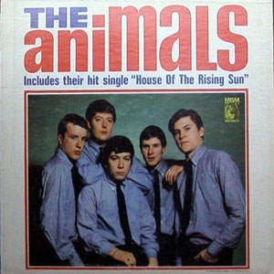

Feito pelos alunos, feito para você!
Você gosta dos videoclipes das suas músicas favoritas? Saiba como se originaram!
16/11 10:28; por Admin

Foto retirada do Google Imagens
Todos nós reconhecemos como os videoclipes atualmente constituem grande parte da indústria musical, mas você alguma vez já se perguntou como surgiram?
Até meados dos anos 80, as músicas eram apresentadas ao público através de vídeos que eram nada mais do que os artistas cantando e tocando sua música, como o clip de “Rebel rebel”, de David Bowie ou “The house of the rising sun”, dos Animals. Nesta mesma época, a indústria musical vivia um período negro, os discos não estavam vendendo bem, e nem as famosas Black Fridays conseguiam alavancar as vendas. Em meio a este contexto, um dos cantores da época decidiu arriscar o orçamento que havia ganhado para compor seu novo álbum investindo fortemente em videoclipes para suas músicas, esse cantor criava todo um enredo detalhado com início, meio e fim para cada canção que compusera.
Ninguém acreditava ou apoiava a criação de vídeo clips, e muitos diziam que o cantor estava cavando sua própria cova gastando grande parte de seu orçamento para realizar estes vídeos. Até que, em 30 de novembro de 1982, os videoclipes do novo álbum desse cantor conseguiram, em menos de um mês, recuperar os altos níveis de vendas das músicas e revolucionar a indústria.
Depois do lançamento deste álbum, toda a indústria aderiu a esta nova forma de divulgação de suas músicas e o cantor responsável por toda esta revolução não foi nada mais nada menos que o eterno Rei do Pop, o incrível Michael Jackson. Eis aqui seu mais famoso vídeo clip:
Aqui você pode por o videoclipe de 13 minutos do thriller.
Foto retirada do Google Imagens
Adicione um comentário sobre essa notícia: OBS: Esse sistema de comentários só funcionará, quando o domínio do site for pago!